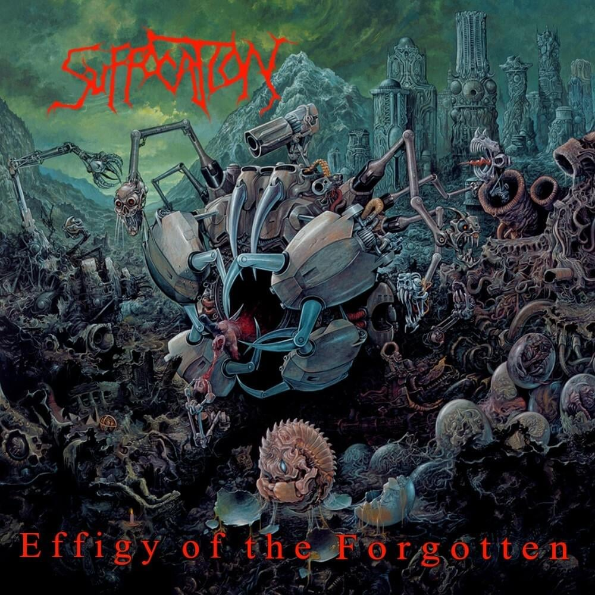
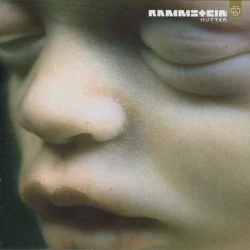
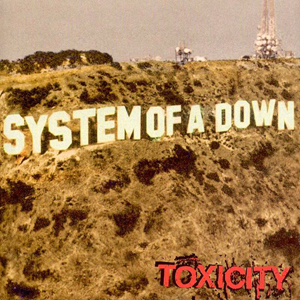

Disclaimer
This playlist review is made for fun and not to be taken seriously, as reviewer has no talent, education or expertise in music area and also no common sense in general. Review for each song is a one-liner and represents pure impression without googling or lyrics' analysis

Download 3
-

4:00A.M - 4:00 A.M.
Taeko Onuki
The song feels like an attempt to recall boiling heat of summer amidst deadly cold winter -

Bloody Kisses (A Death in the Family)
Type O Negative
Sincere reflections about partially selfish nature of mourning -

The Funeral
Band of Horses
The funny-doomed mood of the song is unexpectedly optimistic as if giving you a slight chance for tomorrow -

The Killing Moon
Echo And The Bunnymen
The funny-doomed mood of the song is unexpectedly annoying as if you want protag to get his shit together -

不器用な男
Iori Kanzaki
A kind reminder that pain indeed is a sign of being alive -

Botanist - The Shape of He to Come
Hunter Hunter
Sounds kinda like Kafka's "The Metamorphosis" but also like rain idk -

You Tear the World in Two
Pale Saints
The noise somehow is really comfy and alien-like in terms of language sounding -

Der Vampyr(The Vampire): Overture
Performed by Markus Marquardt Regina Klepper Jonas Kaufmann Franz Hawlata Yoo-Chang Nah Anke Hoffmann Thomas Dewald Heinz Heidbuchel Kay Immer Franz Gerihsen Josef Otten Marietta Schwittay-Niedzwicki Dirk Schortemeier
Written by Heinrich August MarschnerVery relaxing and optimistic melody, it should've been scarier -
Silverwing
Jennie Tebler
A cute and gentle sound reminds of school choirs -

Lucky
Radiohead
The song seems to be good for dancing at night with a loved one -

Crescent
Brendan Perry
Something distant and maybe already dead, yet still beautiful and important for you, like a painting -

My Friend the Wind
Demis Roussos
Painfully romantic song with gypsy accent and a spirit of selebration after long waiting (or is it drunken family party, idk?) -

Good Morning World
BURNOUT SYNDROMES
The beginning is really annoying somehow, but the song overall is inspiring and friendly, like old school teacher, who you really respected -

Like a Stone
Audioslave
Is it slavery or freedom to gift your life to somebody? -

Vampyria
Siebenbürgen
It is something nature-like, like birds singing in the old and dark forest -
Teardrop
Massive Attack
Sounds a bit like medieval legend -

Break It Down Again
Tears for Fears
Makes you feel like you can be a superhero or anime character -
.jpg)
Decades (2007 Remaster)
Joy Division
Wow, the song is even sadder and more stuck than my inner thoughts -

Love Like Blood
Killing Joke
Gives me an urge to watch Bruce Lee movie -

Nights in White Satin (Days of Future Passed Live)
The Moody Blues
The melody and vocal are bumpy in a good way and light enough to be pleasant -

You'll Always Find Me In The Kitchen At Parties
Jona Lewie
Something that is ahead of its time, emotionlessness of a teenager -
.jpg)
After the Ordeal (2007 Stereo Mix)
Genesis
A song for walking, when you are too poor to get somewhere by public transport -

Deutschland
Rammstein
I really like Hoffmann, what a legend! -

Nobody
Mitski
Another good one for crying in the rain, simple and elegant, loved it! -
Washing Machine Heart
Mitski
I'd like to live inside this song but it's way too short -
Red
King Crimson
Heavy and disgusting breath of city on the back of your neck, but you're too tired to notice it -

Mrii
Outer Space
Rock-n-roll is still alive here in this chequered notebook -

Fallen Angel feat. Aimee B
Mitsunori Ikeda
Man, what a cool disco vibe! -

Knives Out
Radiohead
Quoting some legends here: "desperate, but not hopeless" -

Saddest smile
Lebanon Hanover
Try helping somebody, thats the only way of curing sadness that i know -

They Rode On
Watain
Great legend (i may only guess, cause the lyrics are difficult to catch, but the name is eloquent (this female vocal tho 0_0)) -

Du riechst so gut
Rammstein
The sawmill insets are quite wholesome -

TeddyLoid - Me!Me!Me! feat. Daoko
EternalGriever
Kinda original and remix on itself, funny -

Pale Shelter
Tears For Fears
Has a very elegant oldschool vibe, like first Terminator -

Englishman In New York
Sting
I've already forgotten how this song varies in styles and tempo (long-haired Stingyyyy) -

Disco 2000
Pulp
The nostalgia hits hard...tho it's the first time i hear the song it feels like childhood -

Ziggy Stardust
Bauhaus
The guitar is really satisfying, juicy and long-hairy here -

(Nice Dream)
Radiohead
I've always heard here "Do you love me like I lost my brother" and i don't wanna know the real lyrics (one of my favorites) -
Solitude
Candlemass
It's kinda still a life-affirming song, idk what's wrong with me -

Plastic Love-リアムMAZE1981
Shell
Really wholesome, melting like a wagyu -

Love Me Harder
Ariana Grande& The Weeknd
Wow, that's pretty decent, i'm surprised i've never heard of it, tho i like weeknd -

All I Want for Christmas Is You
Mariah Carey
Even super overused, the song is still great and winter-like -
.jpg)
Be Careful (Cuidado Con Mi Corazón)
Ricky Martin & Madonna & Madonna
mmm background melody is really cool, i don't usually like multi language songs, but this one is ok -

Lonely No More
Rob Thomas
Catchy as shit, i like that! -

Animal Instinct
The Cranberries
Sounds like heaven -
Musclebound
Spandau Ballet
It's supposed to be a workout music or what? (i want to mine some coal) -
.jpg)
Paranoid (2009 Remaster)
Black Sabbath
finished with my woman 'cause she couldn't help me with my mind people think I'm insane because i am frowning all the time -
Foreverdark Woods
Bathory
Old good epic battle music, sounds a bit rusty -

Sterile Nails and Thunderbowels
Silencer
It's as if schizophrenia would write a song -

Secrets
The Weeknd
This song is good for everything, i'd like to dance to it once -

What You Know
Two Door Cinema Club
What can i say, i really like the song -

Mr. Jones
Counting Crows
Well, the song sounds more modern then it is -
No Surprises
Radiohead
Story of my life -
Karma Police
Radiohead
Oh, shit! Here we go again -
Confetti
Cold Cave
Oh it's something about feeling guilty because of being alive, that hits the spot! -
.jpg)
A Little Respect (2009 Remaster)
Erasure
Heavenly -
.jpg)
Girlfriend in a Coma (2008 Remaster)
The Smiths
Сarefree sound (the beginning is a bit like duck tales) -

Ask
The Smiths
I really like the way they speedrun and bend sentences -
London
The Smiths
Aggressive yet beautiful, just like any city -

Blood & Fire
Type O Negative
A gloomy druid is sitting in a saloon and drinking alone -

The Less I Know The Better
Tame Impala
The song is my old friend, saved me lots of times but also set me up once -

Blue Monday
New Order
Makes me wanna live in a world of the past without the internet, and go to a shop to rent a movie on dvd -

Baba O'Riley
The Who
The melody creates in my head an image of round pebbles falling down endlessly -
.png)
Strawberry Fields Forever (Stereo Mix 2015)
The Beatles
Something surreal, like Alice in a Wonderland, never knew The Beatles were like this at some point -

Ever Fallen in Love (With Someone You Shouldn't've?)
Buzzcocks
Wtf? Billy Talent's wasn't the original?? Live and learn (and still you'll die dumb) -
Sound Life ～ LEM
AJA
The vibe is eastern in a good way and with a hint of desert and endless sky -

Sweet Disposition
The Temper Trap
I'm fascinated, as this is very my type of music in all of senses -

Want You Bad
The Offspring
Punky punk, ye boi -

Eufori
Apati
Sounds like something worth playing on a burning piano -
.jpg)
Our House (2009 Remaster)
Madness
The rhythm is really nourishing -

雨とカプチーノ - Rain with Cappuccino
Yorushika
The melody is kind, as if i'm allowed to live again -

Lights Out
Breaking Benjamin
That's a nice one, versatile -
.png)
Thank you, my twilight (Fool on cool version)
the pillows
Very refreshing and wholesome (i'm a sucker for this 8-bitness) -
.jpg)
Peace Sells (2004 Remaster)
Megadeth
This kind of songs is good to listen to while drunk (the lyrics are sad tho) -

MONSTER
Reol
Strong vocal, very powerfull song, makes you want to shake your head like crazy -
chase
batta
This song gets more and more great with each listening -
Hello,World!
BUMP OF CHICKEN
Beautiful and life-loving melody -

The Arcane
Dead Can Dance
After all these years? Always. -

Blue
Mai Yamane
Just a tiny bit too hysterical for my taste -

Burnt Flowers Fallen
Type O Negative
Very swinging, clinging and charming melody -

Ein bisschen Frieden
Nicole
I need a woolen shawl -

Au clair de la lune
France Gall
Very girly and tender -

[Cytus II] I can avoid it.#φωφ - Feryquitous【音源】 【高音質
RhythmGameMusic
φωφ -

Danse mon Esmeralda
Luc Plamondon, Riccardo Cocciante & Garou
It's like you're happy because someone dear to you is happy -
Belle
Luc Plamondon, Riccardo Cocciante, Daniel Lavoie & Garou
Sounds like a bitter song -
Beau comme le soleil
Luc Plamondon, Riccardo Cocciante, élène Ségara & Julie Zenatti
Tender, like a lullaby -
Le pape des fous
Luc Plamondon, Riccardo Cocciante & Garou
The vibe here is sort of rock ballad-ish, reminded me about november rain -
There Is a Light That Never Goes Out (2017 Master)
The Smiths
Really sad, but even more beautiful -
ミッドナイトストロウラ - Midnight Stroller
Reol
Road at night and the light of a gas station -
Amelia
Cocteau Twins
Really aerial, like a song of seagulls -

Do You Want To
Franz Ferdinand
Really industrial sound like a working mechanism (i don't like it) -
Persephone
Cocteau Twins
Very touching raw sound, sounds very postmodern and recent -
Christian Woman (Butt-Kissing, Sell-Out Version)
Type O Negative
Okay, they made it as close to a Mass as they could -

the long way home
Powfu, Sara Kays & Sarcastic Sounds
Pleasant, i-can-relate, multi voiced vocal is really nice -

Given Up
Linkin Park
Pure cry for help, let's hope someone will hear -
ただ君に晴れ
ヨルシカ
Really decent and well-made, sounds like something full of young hope -

She's in Parties
Bauhaus
Pretentious, something like bohemian, smoking at night and ruining one's life by bad habits in the name of art -

Strange Machines
The Gathering
Very mesmerising to the point of being a bit psychedelic, but comfy -

Opus Dei
Laibach
The most German sound in the world (another song for dying in a battle, noted) -
.jpg)
New Dawn Fades (2019 Digital Master)
Joy Division
Gloomy but wholesome -

Thunder Kiss '65
White Zombie
Some oldschool rock, drunken and menacing -
Set Me on Fire
Type O Negative
Hits the spot, lightheadedness and thick odors -

Black Black Heart
David Usher
Is it acoustic version?(sounds better than the one i know) -

Total Eclipse of the Heart
Bonnie Tyler
Really cool and nostalgic type of music, but a bit too heavy and suffocating for me (like hay), i wonder why -
I Know It's Over
The Smiths
A tearjerker for me, because it's a very precise song in terms of words' choosing -

Last Night I Dreamt That Somebody Loved Me
The Smiths
There is something jazz-like about this song,i want a jazz cover -
 (Raw Underground Black Metal Finland).jpg)
Thoronath - Goatshrine (1999) (Raw Underground Black Metal Finland)
Oiceoptoma
Would be a nice soundtrack for a Charlie Chaplin's horror movie -
Laisse moi t'aimer
Mike Brant
Not a fan of chanson, but this one is alright -

Paroles, Paroles
The Original Movies Orchestra
Real gold, when she goes "caarameeeeeeeel"... its so satisfying -
'74-'75
The Connells
Got no reason for coming to me and the rain running down, there's no reason -

Mein Land
Rammstein
Greedy sound (also a vibe of Mortal Kombat) -
Летять, Ніби Чайки (1967)
Дмитро Гнатюк
Deep and tender, sad but hopeful -
Morphine Suffering — Білий ангел
EVERMORPHING
Smells like a teen spirit ( the changing of melody at the end is cool tho) -
Morphine Suffering — Світло не згасне
EVERMORPHING
They are always making a cool twist at the end, lol -
Morphine Suffering — Чорний ангел
EVERMORPHING
Hmm, that's rare, i like them right away, though they are out of my usual range -

American Woman
The Guess Who
Trump's pre-election program or smth, i'm not interested in politics -

Lying Is the Most Fun a Girl Can Have Without Taking Her Clothes Off
Panic! At The Disco
Their songs' names are remarkable, like anime titles -
Miss Murder
AFI
Some re-zero flashbacks, lol -
21st Century Schizoid Man
King Crimson
Stylish, rich, jazzy sound, cacophonous af -

Mordred's Song
Blind Guardian
Epic and quite a unique sound, i can hardly remember something similar -

Infecting the Crypts
Suffocation
Nice -
In My Time of Need
Opeth
Chill, melancholic, relaxing sound -

Saturday Night
Misfits
It's a pleasant sound and i suppose the lyrics can be ignored sometimes -
.jpg)
Holiday (2015 - Remaster)
Scorpions
My favorite one, though the overall mood is disturbing -

Wish You Were Here
Blackmore's Night
Wow, that's some serious childhood flashbacks, i've forgotten the song existed -

I Don't Wanna Be Me
Type O Negative
I really like this one, though i'm glad i'm me -
Summer Breeze
Type O Negative
Watermelon sugar but better? -

Hypnotize
System Of A Down
Really talented guys, if only they weren't cottonheads -
Build God, Then We'll Talk
Panic! At The Disco
Wonderfull halty melody and cute nonsensical lyrics -
Spiders
System Of A Down
That's a good one, i'm hearing it for the first time -

For Whom The Bell Tolls
Metallica
Golden -

Face Down
The Red Jumpsuit Apparatus
The song is a bit naive, i like that -

Dance, Dance
Fall Out Boy
Energetic as usual, og Fall Out Boy -
.jpg)
Wings (remix)
Sweet Remixes Collection
Perfect for night -

Murder Mitten
I See Stars
Nice, not mine, but i can appreciate -
Satan-Prometheus
Gorgoroth
I was about to say it's too monotonous, but vocal in the middle is pretty good -
.jpg)
Blashyrkh (Mighty Ravendark)
I was about to say it's too monotonous, but vocal in the end woke me up a bit -
The Inner Revenge of Nature
Hellsaw
Funny, reminds me of horse riding -

No, It's a Cardigan, but Thanks for Noticing
Defiler
I tried to get it, but couldn't, my guess that the song may be good for walks -

One More Red Nightmare
King Crimson
Atmosphere of the old american tv series, luxurious hotels, hot air, murders -

Sonne
Rammstein
They really do like to count in their songs, don't they? (Very pleasant and elaborated sound) -
Arise
Sepultura
I like this one, it's honest and straightforward in terms of the sound flow -

Walk In The Glow
Defiler
Not bad, even a bit melodic and listenable -
Cryomancer
Defiler
Epic meme song, really makes me wanna laugh a little (and it's quite decent itself) -
Black No. 1 (Little Miss Scare -All)
Type O Negative
Great and unusual, some Def Leppard moments? and catholic organ-like accents and pastoral and also classic Type O Negative -
Horizon
Motanka
This song gives me a feeling of weightlessness, like freefall or diving -

Boys Don't Cry
The Cure
Cute, heartbreaking, prim -
M.I.L.F
Funkin' Sound Team & Kawai Sprite
I guess it's very funkin... and kawai -
Descending Angel
Misfits
I used to do my laundry by hand while listening to this song, I liked it -

The Kill
Thirty Seconds To Mars
The only one of Thirty Seconds To Mars i know, the song is ok -

Who Wants To Live Forever
Breaking Benjamin
Great light cover -
Christian Woman
Type O Negative
Masterpiece -

Glory Box
Portishead
Bluesy but not annoying, good job! -

Devillic Sphere
3R2
Sounds just like any football championship soundtrack -
Harvest
Opeth
Warm, feels like an old friend -
Космішна
The ВЙО
I like the minimalism -

Без контролю
Фантом-2
Immortal classic -

Always on My Mind
Pet Shop Boys
Feels heavenly, diamond in the rough -

Anywhere Out of the World
Dead Can Dance
Dark and philosophical, could've been a villain's monologue in a musical -

The Writing on My Father's Hand
Dead Can Dance
Sounds like a ritual ceremony (well, yeah... just like any of their songs) -

花に亡霊 - Ghost in a Flower
Yorushika
Cautious and lighthearted, just like my cat -
K.I.N.G
Satyricon
The main riff is nice -

All Along The Watchtower
The Jimi Hendrix Experience
The vibe of a vast and wild prairie with a withered grass -
Pace of the Space
Motanka
Wow, that's surfy... and calming -

Roses for the Dead
Funeral For A Friend
Nice, but i can't quite feel it -

Revolution Is My Name
Pantera
It is intentionally sharp, prickly sound -
.jpg)
Cult of Personality (2023 Remaster)
Living Colour
Voluminous but a bit too heavy, like a gypsy's decorations -
Creep
Radiohead
Story of my life -

Love Will Tear Us Apart
Joy Division
I like the restrained and distant vocal, the song is believable this way -
This Charming Man (Single Version) [2008 Remaster]
The Smiths
A banger, makes me wanna roam in the dark and empty city (the curfew tho...) -
Nekrohaven
Satyricon
The rhythm is comfortable -
The Host of Seraphim
Dead Can Dance
Wow, very ukrainian sound, also beautiful and tragic (reminds me of Boromir's death) -
.jpg)
Persephone (The Gathering of Flowers)
Dead Can Dance
Death of the unicorn, witchcraft and dark forest -
Angel (feat. Horace Andy)
Massive Attack
Sad, desperate sound, like an addiction -

Fade To Black
Metallica
"I was me, but now he's gone" -

真夜中のドア/Stay With Me - Mayonaka no Door / Stay With Me
Miki Matsubara
Sounds like summer and the sea, your shoulders are completely burned -

Dust in the Wind
Kansas
Sad but true -
.jpg)
I Know It's Over (2017 Master)
The Smiths
Remaster seems pretty much the same, i'm a noob tho -
In Power We Entrust the Love Advocated
Dead Can Dance
That's something unusual, almost cheerfull! -

だから僕は音楽を辞めた
ヨルシカ
Emotional song, may be something about meaning of life? lol idk -

Everlong
Foo Fighters
OG FF, pulling the strings so hard -

Plug in Baby
Muse
Powerfull, one of their best -

How Soon Is Now?
The Smiths
The magical aura will inevitably be clinging to the song, lol -

A Forest
The Cure
They really do sound modern af (holly cow, the song is more than 40 years old) -

Don't Look Back in Anger
Oasis
I like Oasis, but their songs make me a bit carsick -

Modern Crusaders
Enigma
Very different, oldschool and modern, electronic and epic -

Would? (2022 Remaster)
Alice In Chains
A bit too broken to be enjoyable for me -

Walking in My Shoes
Depeche Mode
Hypnotizingly beautiful, i really like the lyrics -

Beloved Girlfriend
Sinn Sisamouth
Flow of his voice reminds of mountains and clean air -

Friday I'm In Love
The Cure
Heartwarming, hymn for us, blue-collars -
Wonderwall
Oasis
I don't really get the idea of a wanderwall, but the song is romantic and hopefull -

Black Hole Sun
Soundgarden
My old friend, great for potato digging -

Toxicity
System Of A Down
Great contrast as usual